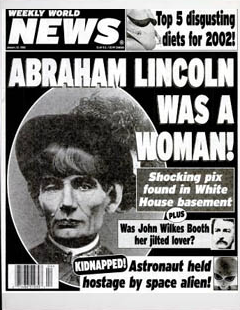
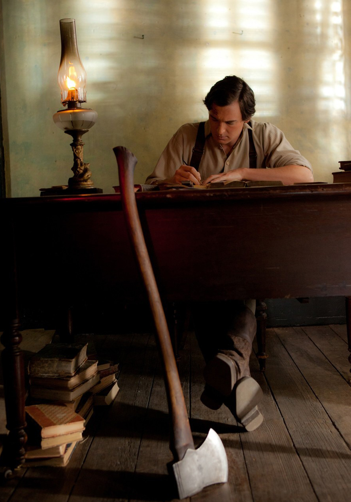
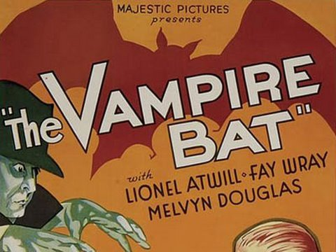

|
"ABRAHAM LINCOLN WAS A WOMAN!" In 2002, a cover story in The Weekly World News
reported that a cache of Mathew Brady daguerreotypes of "Babe-raham Lincoln" had been
found in the basement of the White House, and hidden among the president's effects at the
Smithsonian was a telltale box of sanitary napkins. Lincoln, it was disclosed, had married
a man ("Take a look at a photo of Mary Todd Lincoln and you'll be convinced") and given
birth to six children. All this, however, is ho-hum compared with the revelations in the
|

This issue of the Weekly World News was
one of its best-sellers before the paper switched to an online-only
format.
|
coming film Abraham Lincoln: Vampire Hunter, in which our 16th president is,
basically, Buffy in a stovepipe hat.
The film is an adaptation of a novel by Seth Grahame-Smith. Mr. Grahame-Smith's first
book was an illustrated encyclopedia called The Big Book of Porn. A few years
later, he published the best-selling Pride and Prejudice and Zombies, in which Mr.
Darcy delights in vanquishing the undead. Abraham Lincoln: Vampire Hunter came out
in 2010, right after the 200th anniversary of Lincoln's birth and just in time for the
150th anniversary of his election.
Lincoln sells. Vampires sell. It's a twofer. Still, you couldn't pull this off with
just any old president. "Probably it wouldn't work with F.D.R.: Vampire Hunter,"
the Pulitzer Prize-winning Lincoln biographer Eric Foner told me.
Let's face it: it helps that Lincoln looks like Frankenstein. Plus, he's got that ax.
Mr. Grahame-Smith's novel chronicles "the hidden history of vampires in America," as
revealed in Lincoln's secret diary, and proves that vampires are responsible for nearly
everything bad that has ever happened in American history--every murder, every
slaughter--except that vampires helped Americans win the Revolutionary War (Give me
liberty and give me death), fighting alongside the minutemen, because they needed a
country where they could be free to live off the Africans they kept in chains, as zombies.
"Is it possible that most other vampire options have run out?" wondered David W.
Blight, a Civil War historian at Yale, when I asked him what he made of the news that John
Wilkes Booth had fangs. Tony Horwitz, author of Midnight Rising, said that John
Brown thought of himself as waging "an eternal war with slavery," but, as Mr. Horwitz
points out, Brown wasn't fighting phantoms. He was fighting human bondage involving such
|

Abraham Lincoln's axe is a central element of
the plot of Abraham Lincoln: Vampire Hunter
|
profound suffering that Frederick Douglass described eventual freedom as "a resurrection
from the dark and pestiferous tomb." If demons were responsible for slavery, that would be
a whole lot less horrible than what really happened.
What explains the ongoing literary blood bath? Ever since Dracula was published
in 1897, and for a long time after that, when it was difficult to find much to read about
sex, reading about vampires was a way to read about sex without having to check titles
like The Big Book of Porn out of the library. It's no longer difficult to read
about sex, as sex--except, maybe, for children, to whom a great many vampire books are now
marketed.
THIS spring's biggest publishing sensation, E. L. James's Fifty Shades of Grey,
the story of a virgin who submits to a sadist, apparently began as a book about
vampires--fan fiction involving the lead characters from Twilight, a vampire series
whose readership includes a lot of young readers. Then Ms. James decided she could just
take the vampirism out. What's left is sadism. I'd have stuck with the undead.
The latest chapter in the history of vampires began in 1976, with Interview With a
Vampire. Anne Rice's Lestat series reached the height of its popularity in the 1980s,
during the triumph of another kind of bloodthirstiness: Wall Street greed. In the 1990s,
Joss Whedon's Buffy the Vampire Slayer celebrated third-wave feminism. (Mr. Whedon
told The Times that he could have made a documentary called Buffy the Lesbian
Separatist, but the ratings wouldn't have been as good.) Stephenie Meyer's
Twilight series began in 2005; its purchase on the American imagination is not
unrelated to the Christian right's advocacy of abstinence in the ongoing debate over what
|

Vampire movies have been a staple of Hollywood filmmakers
for a century; this poster comes from 1933's The Vampire Bat.
|
public schools should teach kids about sex. Abraham Lincoln: Vampire Hunter arrived
during the Tea Party years, when sales of Father's Day biographies of American presidents
were peaking.
This year, Mr. Grahame-Smith has not one but two vampire films in theaters; he wrote
the screenplay for Dark Shadows, a resurrection of a 1960s soap opera, in which
Barnabas Collins, a vampire locked in a coffin some 200 years ago, is awakened in 1972,
only to be doomed to listen to Alice Cooper and suck the blood of hippies.
Every vampire story has its day or, I guess, its night. But there's a longer history
here, too. In the 18th century, when Barnabas Collins and Lestat became vampires, the
shape and length of life were different. So was death. When Abraham Lincoln was born, the
average age of the United States population was 16, and life expectancy was under 40. Two
centuries later, the average American can expect to live to nearly 80. Living longer
hasn't made dying any easier; arguably, it's made it harder.
Dread of death, not love of sex, is why the dead keep rising. And no Lincoln can defeat
that, not even Babe.
Source: Jill Lepore in The New York Times (June 3, 2012).
|